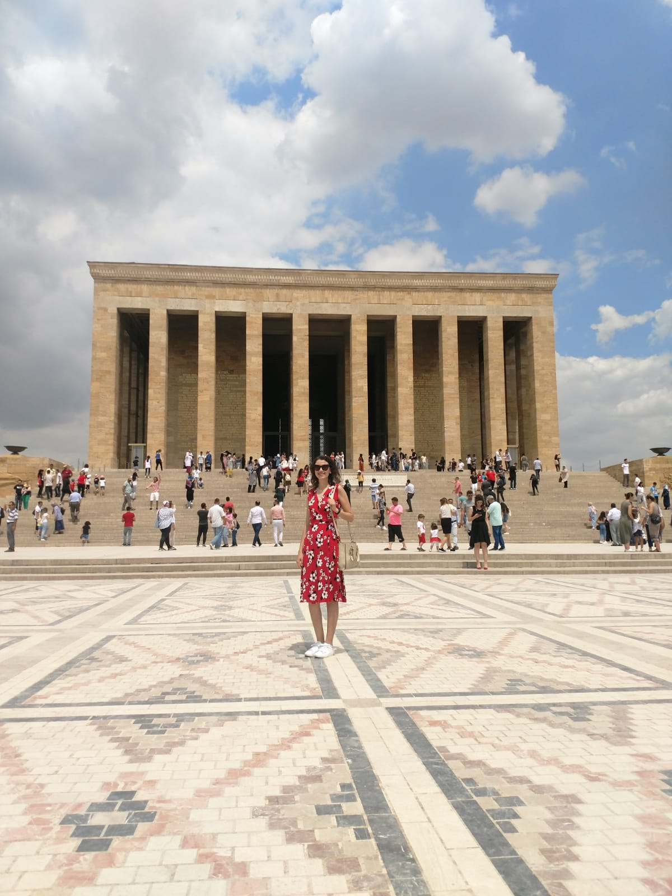
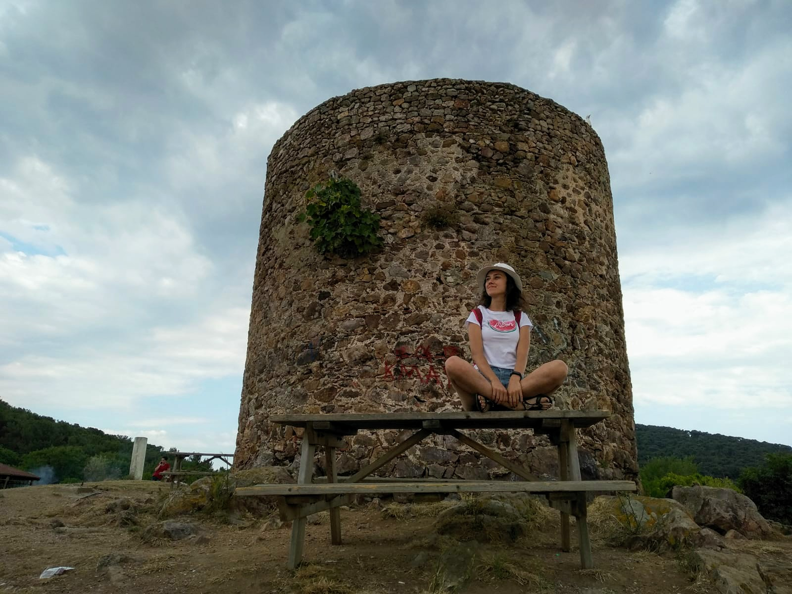

<!DOCTYPE html>
<html lang="en">
<head>
  <meta charset="UTF-8">
  <meta name="viewport" content="width=device-width, initial-scale=1.0">
  <meta http-equiv="X-UA-Compatible" content="ie=edge">
  <title>Manipulating the DOM</title>
  <!-- Load Google Fonts -->
  <link href="https://fonts.googleapis.com/css?family=Fira+Sans:900|Merriweather&display=swap" rel="stylesheet">  <!-- Load Styles -->
  <link href="css/styles.css" rel="stylesheet">
<body>

  
</body>
</html><!DOCTYPE html>
<html lang="en">
<head>
  <meta charset="UTF-8">
  <meta name="viewport" content="width=device-width, initial-scale=1.0">
  <meta http-equiv="X-UA-Compatible" content="ie=edge">
  <title>Manipulating the DOM</title>
  <!-- Load Google Fonts -->
  <link href="https://fonts.googleapis.com/css?family=Fira+Sans:900|Merriweather&display=swap" rel="stylesheet">  <!-- Load Styles -->
  <link href="css/styles.css" rel="stylesheet">
</head>
<body>
  <!-- HTML Follows BEM naming conventions 
  IDs are only used for sections to connect menu achors to sections -->
  <header class="page__header">
    <nav class="navbar__menu">
      <!-- Navigation starts as empty UL that will be populated with JS -->
      <ul id="navbar__list"></ul>
    </nav>
  </header>
  <main>
    <header class="main__hero">
      <h1>Places in Turkey </h1>
    </header>
    <!-- Each Section has an ID (used for the anchor) and 
    a data attribute that will populate the li node.
    Adding more sections will automatically populate nav.
    The first section is set to active class by default -->
    <section id="section1" data-nav="Section 1" class="your-active-class">
      <div id="section1-header" class="hide">Ortakoy</div>
      <div class="landing__container">
        <h2>Ortaköy</h2>
			
			<article>
				Ortaköy (literally Middle Village in Turkish) in Greek known as Agios Fokas (Άγιος Φωκάς) in the Byzantine period and Mesachorion (Μεσαχώριον, meaning "middle village") later, is a neighbourhood, formerly a small village, within the Beşiktaş district of Istanbul, Turkey, located in the middle of the European bank of the Bosphorus.
			</article>	
      </div>
    </section>
    <section id="section2" data-nav="Section 2">
      <div id="section2-header" class="hide">Selimiye</div>
      <div class="landing__container">
        <h2>Selimiye Mosque</h2>
        
        <article>
          The Selimiye Mosque (Turkish: Selimiye Camii) is an Ottoman imperial mosque, which is located in the city of Edirne (formerly Adrianople), Turkey. The mosque was commissioned by Sultan Selim II, and was built by the imperial architect Mimar Sinan between 1568 and 1575.[2] It was considered by Sinan to be his masterpiece and is one of the highest achievements of Islamic architecture.
        </article>
      </div>
    </section>
    <section id="section3" data-nav="Section 3">
      <div id="section3-header" class="hide">Anıtkabir</div>
      <div class="landing__container">
        <h2>Anıtkabir</h2>
			
			<article>
				Anıtkabir (literally, "memorial tomb") is the mausoleum of Mustafa Kemal Atatürk, the leader of the Turkish War of Independence and the founder and first President of the Republic of Turkey. <br>
				It is located in Ankara and was designed by architects Professor Emin Onat and Assistant Professor Ahmet Orhan Arda, whose proposal beat 48 other entries from several countries in a competition held by the Turkish Government in 1941 for a "monumental tomb" for Atatürk.
			</article>	
      </div>
    </section>
    <section id="section4" data-nav="Section 4">
      <div id="section4-header" class="hide">Heybeliada</div>
      <div class="landing__container">
        <h2>Heybeliada</h2>
				
				<article> Heybeliada or Heybeli Ada (Greek: Χάλκη, Halki) is the second largest of the Prince Islands in the Sea of Marmara, near Istanbul.<br> 
					It is  officially a neighborhood in the Adalar district of Istanbul, Turkey.<br>
					The large Naval Cadet School overlooks the jetty to the left as you get off the ferry or seabus.</article>
      </div>
    </section>
  </main>
  <footer class="page__footer">
    <p>&copy Udacity</p>
  </footer>
  <script src="js/app.js"></script>
</body>
</html>